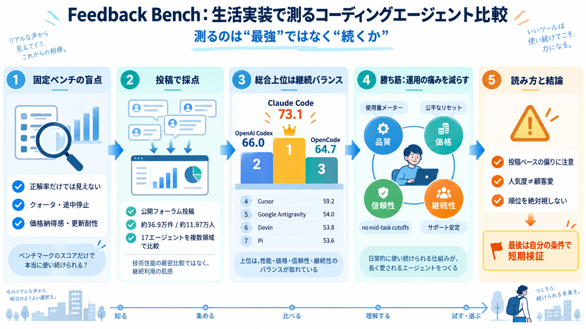

YSK: Its is the possessive form of it and it's means it is.
Its is the possessive form of it and it's means it is. Possessive "its" means the food was the cat's. "it's" means "it i…

Its is the possessive form of it and it's means it is. Possessive "its" means the food was the cat's. "it's" means "it i…
Looking online I seem to find conflicting answers regarding whether or not these two words should be capitalized in a ti…
Some people argue that if you write "the internet", it should be written with a lowercase 'i' because the article makes …
For example, if there's a special guard called "the Coastal Guard", would it be The Coastal Guard since the name itself …
A lowercase “i” on its own is never used in proper English grammar so I think it's a habit for/looks incorrect to many o…